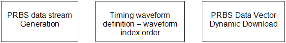
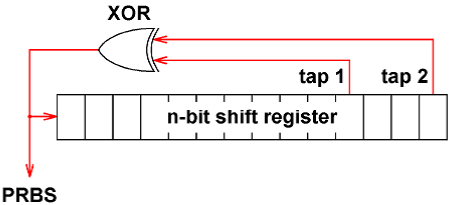
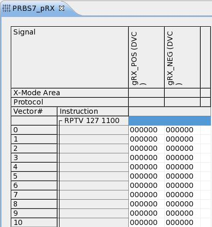
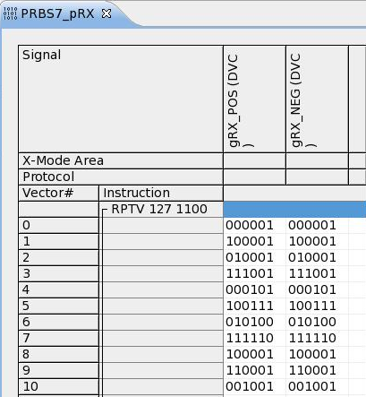
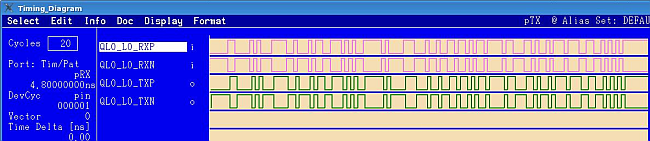

A Novel Dynamic Method to Generate PRBS Pattern
Wei-Min ZHANG, Verigy
Paper-ID: 129462 October 2011
Abstract
PRBS patterns have been widely used in high speed device testing. To set up PRBS patterns in V93000 SmarTest program development, the engineer would traditionally create a PRBS pattern in ASCII format and then do ASCII to binary conversion process to generate the final loaded pattern. In this paper, a novel dynamic method will be introduced to simplify this whole process and can generate PRBS patterns directly and dynamically based on VECTOR_LABEL_EDIT APIs. It not only shortens development time but also provides an advantage in flexibility and extended capability.
Key Words
High Speed, PRBS, Pattern Generation, VECTOR_LABEL_EDIT
Introduction
PRBS (Pseudorandom binary sequence) patterns [1] have been widely used in high speed device testing. To set up a PRBS pattern in V93000 SmarTest program development, it is a common task to generate a loaded PRBS pattern. There are several ways to generate a PRBS pattern. For example, use the hardware PRBS generator if applicable, but in most cases we still need normal PRBS patterns to be stored in vector memory.
Traditionally, the engineer will need to create a PRBS pattern in ASCII format. For example: AVC format file and timing mapping file in SmarTest, then use the ASCII interface tool - aiv to do ASCII to Binary pattern conversion and generate the final loaded pattern. The whole process is complex and time consuming.
Actually, with SmarTest version 6.3.2 and above, a very useful new API: VEC_LABEL_EDIT [2] is built in. It provides the capability to dynamically modify label vectors at runtime.
In this paper, a novel dynamic method will be introduced to generate PRBS patterns based on VECTOR_LABEL_EDIT. It not only shortens development time but also provides advantages in flexibility and extended capability.
Key Elements for PRBS pattern Generation
For PRBS pattern generation, several key elements need to be considered.
- PRBS data stream generation
- Timing waveform definition - the waveform index order
- PRBS vector data download

In the following sections, each topic will be discussed and practical ways to address these challenges will be provided.
PRBS Data Stream Generation
PRBS patterns are typically described by the shorthand notation "2X-1". The power, X, indicates the length of the shift registers used to create the pattern and every possible combination of the X number of bits (minus one). The X value also indicates the longest series of 0's and 1's present in one pattern.
PRBS pattern |
Primitive Polynomial |
Pattern bits |
|---|---|---|
27-1 |
1+X6+X7 |
127 |
215-1 |
1+X14+X15 |
32,767 |
223-1 |
1+X18+X23 |
8,388,607 |
231-1 |
1+X28+X31 |
2,147,483,647 |
The PRBS data stream is usually generated by a linear feedback shift register (LFSR) [3]. There are basically two possible realizations of LFSR - Fibonacci (many-to-one) and Galois (one-to-many). An LFSR represented by a primitive polynomial will produce a maximal length sequence.

Figure 1. Fibonacci (many-to-one) LFSR with two taps
Many PRBS generators simulate the Fibonacci LFSR process by algorithm to generate the PRBS data stream.
PRBS generator polynomial selection
The first step is to select the PRBS generator polynomial, The following function only need specify the power of polynomial, then according to primitive polynomial to set up tap variables.
static unsigned long PRBS_POLYNOMIAL_1ST ;
static unsigned long PRBS_POLYNOMIAL_2ND ;
static void set_polynomial ( int order )
{
switch ( order )
{
case 7 : //1+X6+X7
PRBS_POLYNOMIAL_1ST = 0x00000040UL ; //0x40 = b01000000
PRBS_POLYNOMIAL_2ND = 0x00000020UL ; //0x20 = b00100000
break ;
case 15 : //1+X14+X15
PRBS_POLYNOMIAL_1ST = 0x00004000UL ;
PRBS_POLYNOMIAL_2ND = 0x00002000UL ;
break ;
case 23 : //1+X18+X23
PRBS_POLYNOMIAL_1ST = 0x00400000UL ;
PRBS_POLYNOMIAL_2ND = 0x00020000UL ;
break ;
}
}PRBS data bit generation by LFSR algorithm
To simulate the LFSR process, the algorithm
uses the following prbs_data()
function.
static unsigned long prbs_shift_reg ;
static int prbs_databit(void) /* return 0 or 1 */
{
bool first_tap , second_tap , newbit ;
first_tap = (prbs_shift_reg & PRBS_POLYNOMIAL_1ST)>0 ;
second_tap = (prbs_shift_reg & PRBS_POLYNOMIAL_2ND)>0 ;
newbit = first_tap ^ second_tap; //XOR
prbs_shift_reg [ index ] <<= 1 ;
prbs_shift_reg [ index ] &= 0xfffffffeUL ;
prbs_shift_reg [ index ] |= (unsigned long)newbit ;
return ( ( int ) newbit ) ;
}Use
repeat to call this prbs_data() function, then the PRBS data stream can be
generated.
put PRBS setting together
The PRBS_SETTING()
function will integrate the polynomial setup and also seed the initialize
setup.
void PRBS_SETTING(int polynomial, int seed)
{
set_polynomial(polynomial) ;
prbs_shift_reg = seed ; /* set initial seed for prbs generation */
}V93000 timing waveform definition
The second step is defining PRBS waveform when the data stream is ready. Generally in high speed waveform definition, Xmodes will be used to utilize the advantage of multiple driver edges and compare edges in V93000, and also to archive the maximum data rate. In SmarTest, waveforms can be defined in STD mode or PS3600-FAST mode. No matter which mode is used, the key thing is the waveform index should be the same as the defined waveform sharp, so it provides the most simplified waveform mapping algorithm. It will used in the following pattern generation.
STD mode:
PINS RX_P@diff 0 "d1:0 d2:0 d3:0 d4:0 d5:0 d6:0 d7:0 d8:0" 00000000 1 "d1:0 d2:0 d3:0 d4:0 d5:0 d6:0 d7:0 d8:1" 00000001 ... fe "d1:1 d2:1 d3:1 d4:1 d5:1 d6:1 d7:1 d8:0" 11111110 ff "d1:1 d2:1 d3:1 d4:1 d5:1 d6:1 d7:1 d8:1" 11111111 brk "10101010" PINS TX_P@diff 0 "d1:FNZ r1:L r2:L r3:L r4:L r5:L r6:L r7:L r8:L" LLLLLLLL 1 "d1:FNZ r1:L r2:L r3:L r4:L r5:L r6:L r7:L r8:H" LLLLLLLH fe "d1:FNZ r1:H r2:H r3:H r4:H r5:H r6:H r7:H r8:L" HHHHHHHL ff "d1:FNZ r1:H r2:H r3:H r4:H r5:H r6:H r7:H r8:H" HHHHHHHH
FAST mode:
PINS RX_P@diff 0 "[01][01][01][01][01][01][01][01]" brk "10101010" PINS TX_P@diff 0 "[LH][LH][LH][LH][LH][LH][LH][LH]"
Novel way to PRBS Data Vector Dynamic Download
The third step is the VEC_LABEL_EDIT APIs will be used for vector dynamic download, since Xmodes will be used in waveform definition, attention needs to be paid to handle Xmodes correctly. The following code will be based on Xmodes and shift single bits to data and prepare each vector for the physical waveform index. Finally the index data stored in VECTOR_DATA will be downloaedd directly to vector memory.
void PATTERN_GEN(string label, int pattern_start, int XMODE,int totalDataBits, string pinlist)
{
map<string, VECTOR_DATA *> map_Vector;
map<string, VEC_LABEL_EDIT *> map_Label;
int data;
STRING_VECTOR pins = PinUtility.getDigitalPinNamesFromPinList
(pinlist,TM::I_PIN|TM::O_PIN|TM::IO_PIN,false,false,PIN_UTILITY::DEFINITION_ORDER);
for(unsigned int i=0;i<pins.size();i++)
{
map_Vector[pins[i]] = new VECTOR_DATA[totalDataBits];
map_Label[pins[i]] = new VEC_LABEL_EDIT(label,pins[i]);
}
for(int i=0; i<totalDataBits; i++)
{
// From serial PRBS data stream to Xmode vector index:
//process Xmode data
data = 0;
for(int j=0;j<XMODE;j++)
{
data <<= 1;
data |= prbs_databit(); //continue call prbs_databit get next bit
}
//store data prepare for modification
for(unsigned int pin=0;pin<pins.size();pin++)
{
map_Vector[pins[pin]][i].vectorNum = pattern_start+i;
map_Vector[pins[pin]][i].phyWvfIndex = data;
}
}
//download vector
for(unsigned int pin=0;pin<pins.size();pin++)
{
map_Label[pins[pin]]->downloadUserVectors(map_Vector[pins[pin]], totalDataBits);
}
//release memory
for(unsigned int i=0;i<pins.size();i++)
{
delete [] map_Vector[pins[i]];
delete map_Label[pins[i]];
}
}PRBS pattern generation by test method
Putting all of the above code into a single C++ header file, for example, file name can be called PATTERN_GEN.h, then it is easier to re-use this function in the test method code. The following test method code provides the sample to generate a PRBS7 pattern.
But keep in mind before executing that test method code, two empty pattern labels need to be prepared that will be modified in the code. And the key thing for empty pattern labels is the need to insert the correct number of vector lines. For example, for the PRBS7 pattern, 127 vector lines need to be inserted.
#include "PATTERN_GEN.h"
virtual void run()
{
int XMODE = 6;
int totalDataBits = 127;
PRBS_SETTING(7,1); //PRBS7, seed = 1
PATTERN_GEN("PRBS_pRX",totalDataBits, XMODE, "RX_P,RX_N");
PRBS_SETTING(7,1); //PRBS7, seed = 1;
PATTERN_GEN("PRBS_pTX",totalDataBits, XMODE, "TX_P,TX_N");
return;
}
Figure 2. Example Empty pattern label

Figure 3. Example Pattern after modification

Figure 4. Example PRBS7 Pattern timing diagram
Summary
In this paper, the PRBS generation theory and a practical way to generate a PRBS pattern dynamically by SmarTest VEC_LABEL_EDIT APIs have been introduced. The process is shown that also provides re-useable functionality, and flexibility on customization and extended capability. It can fit different timing waveform definition by only specifying different Xmode parameter.
Furthermore, when PRBS patterns combine with the 8B10B coding process, it can be easier to add on to the current algorithm and generate the target data stream if needed. For high speed PRBS pattern synchronization, since the whole PRBS pattern can generated by a test method dynamically, it also improves debug efficiency since it can very easily adjust the settings based on online debug result.
References
[1] http://en.wikipedia.org/wiki/Pseudorandom_binary_sequence
[2] Profile UI User Documentation: VEC_LABEL_EDIT
[3] http://en.wikipedia.org/wiki/Linear_feedback_shift_register